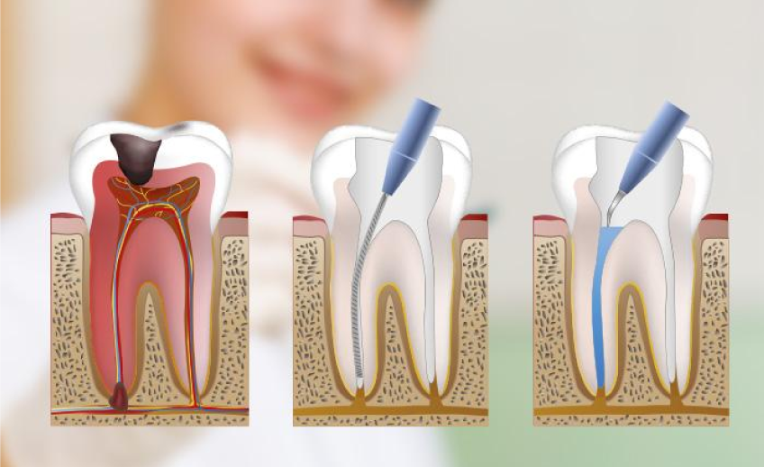

Tratamiento de Conducto Dental: Conserva tu Sonrisa con Cuidado Especializado
El tratamiento de conducto dental, también conocido como endodoncia, es un procedimiento especializado diseñado para salvar dientes que están gravemente dañados, infectados o con pulpas inflamadas. Este tratamiento es fundamental para preservar la estructura y la función del diente afectado, evitando la necesidad de extraerlo.
En nuestra clínica, entendemos que la salud dental es fundamental para tu bienestar general. Por eso, ofrecemos tratamientos de conducto dental de alta calidad y personalizados para satisfacer tus necesidades individuales y restaurar tu sonrisa con cuidado especializado.
Durante un tratamiento de conducto dental, nuestro equipo altamente capacitado realizará una serie de pasos meticulosos para limpiar y desinfectar el conducto radicular del diente afectado. Esto implica la eliminación cuidadosa de la pulpa dental infectada o inflamada, seguida de la desinfección y el sellado del conducto para prevenir futuras infecciones.
Una vez completado el tratamiento de conducto, restauraremos el diente con una corona dental para protegerlo y fortalecerlo, devolviéndole su forma, función y apariencia natural. Esto te permitirá volver a disfrutar de una sonrisa saludable y funcional sin comprometer la estética.
Si experimentas dolor intenso, sensibilidad dental persistente o inflamación alrededor de un diente, es posible que necesites un tratamiento de conducto dental para salvarlo. ¡No pospongas tu salud dental! ¡Contáctanos hoy mismo para programar una consulta y descubrir cómo el tratamiento de conducto dental puede ayudarte a conservar tu sonrisa y tu salud bucal!
